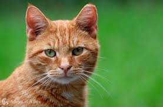

Cats in 2025: Stats to Watch
by
Cats are mysterious little creatures, and somehow even their fur color seems to play a role in how people decide to adopt them, which is wild when you think about it like, are people really out here choosing between life companions based on coat aesthetics as if they’re picking out a throw pillow?
Apparently, yes, because black cats, despite being sleek, elegant, and basically tiny panthers, still get passed over due to superstitions, and meanwhile, orange cats who are basically goblins wrapped in sunshine fur get scooped up like they’re the golden retrievers of the cat world
All im saying is that all colors of cats should be given a chance to shine. You never know when taking a chance and adopting a cat might land you a forever furry friend fo the rest of your life.
Below is a table I made to summarize Cats by their respective color:
| Color | Adoption Rate | Overall Satisfaction |
|---|---|---|
| Orange | High | Very Destructive, 10/10 |
| Tuxedo | Medium | Very Lazy, 10/10 |
| Grey | High | The perfect 10/10 Cat. |